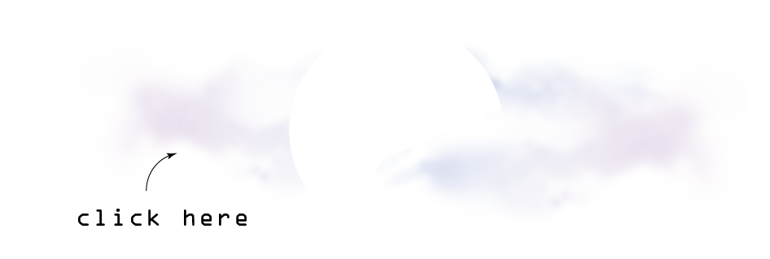

Today, our feeds control us. Social media floods us with a deluge of information that is at once overwhelming, addicting and empty. But how can our information diets be a source of awareness?
When one meditates, the goal is to maintain a blank mind and focus on the breathe. Thoughts come and go, but the critical teaching is to let them be water under the bridge and not get pulled into their immersive mental formation. Sometimes certain thoughts recur frequently, indicating some underlying disposition. By simply observing these thoughts and their patterns, meditation provides insights into consciousness, and deep-rooted awareness.
Just as these errant thoughts can be obstacles to help facilitate awareness, so can the contents your newsfeed. zenfeed is a extended intelligence tool that provides an alternative view into social media, thus turning it into a meditative act.
zenfeed is a chrome extension that transforms your Twitter newsfeed into a one minute meditative experience. Watch your feed become an empty vessel for reflection and relaxation, as your tweets bounce about. See you if you can let them go and focus rather on your own breathing.

zenfeed was incepted and nurtured in the Principles of Awareness class at the MIT Media Lab.
built by:
Ziv Epstein, Oceane Boulais and Matt Groh
advised by:
Karthik Dinakar, Ariel Eckblaw, Joi Ito and the Venerable Tenzin Priyadarshi.
Powered by d3.js and Wind Chime, Gamelan Gong, by InspectorJ (www.jshaw.co.uk) of Freesound.org
- about
- feed your zen
- team